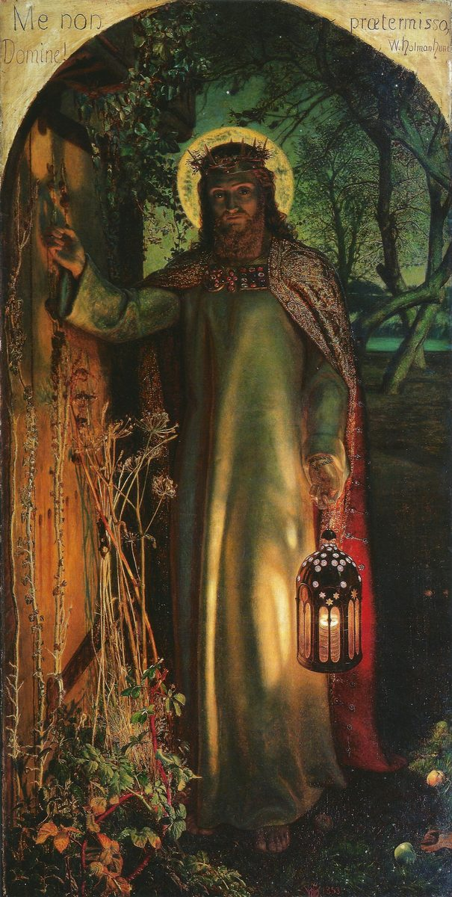

Revelation 3 — The Mister Translation

⚠ Look for the door handle — there isn’t one. Hunt painted the door of Revelation 3:20 with no way to open it from the outside on purpose: it can only be opened from within. The overgrown weeds at the threshold suggest a door that has not been opened in a long time. When first exhibited in 1854, critics mocked the painting’s murky darkness and stiff, almost medieval style — until John Ruskin published a long letter defending it in The Times that May, walking readers through its symbolism point by point and ranking it among the noblest sacred art of any era. Hunt, one of the founders of the Pre-Raphaelite Brotherhood, later painted two further versions — a larger one, completed in 1900, toured the British Empire before settling in St Paul’s Cathedral, London, and became one of the most widely reproduced religious images of the era. This is the original, smaller version, still at the Oxford college that commissioned it.
{kind=link}
Translator’s Notes
The letter with no praise. Every other congregation gets at least one commendation before the complaint; Sardis gets none. The city itself supplies the irony without help: it sat on an all-but-impregnable acropolis and was famously sacked TWICE in its history by surprise night attacks, both times because a guard grew careless about watching the one approach an enemy could climb. “If you will not be watchful, I will come like a thief” (v3) is a threat with the city’s own history built into it. The verb rendered “watchful,” grēgoreō, is the root behind the name Gregory — a command that became, centuries later, a baptismal name.
“A few names,” not merely a few people. The Greek says onomata, NAMES, and the noun is not decorative: it sets up v5’s promise directly — a name kept clean in Sardis becomes a name kept in the book of life. The chapter moves from a city’s public reputation (“a name that you live”) to a heavenly registry, using the same word for both kinds of name.
The only letter with no complaint at all — not even Smyrna’s chapter got a fully clean record, though it came close. “The key of David, who opens and no one will shut, and shuts and no one opens” borrows its wording directly from Isaiah 22:22, where the same phrase is given to Eliakim, a steward installed over Hezekiah’s household with sole authority to grant or deny access to the king. Revelation hands the same total authority to Christ over something larger: not a palace, but who enters the kingdom. The open door that follows (v8) has become common Christian idiom for an opportunity too good to be manufactured — the phrase’s whole life outside this book starts here.
⚠ “I will keep you FROM the hour of trial” (v10) is translated almost identically across every English and Spanish version checked here — KJV, ASV, NIV, ESV, RV60, NVI — so this is not a translation dispute. It is an INTERPRETIVE one: does “keep from” (Greek ek, out of) mean removal before the trial arrives, or protection sustained all the way through it? Whole theological systems have been built on the answer, and the single preposition is asked to carry more weight than one clause in one letter to one small city can settle by itself.
A pillar, in an earthquake city. Philadelphia sat in one of the most seismically active regions of Asia Minor and had been leveled by a major earthquake within living memory of this letter (AD 17, the same quake that damaged Sardis); aftershocks were frequent enough that ancient writers describe residents camping outside the rebuilt city, afraid to sleep indoors. Against that backdrop, “I will make him a pillar … he will never go out from it again” (v12) promises the one thing an earthquake city could not promise its own buildings: permanence. The threefold naming that follows — God’s name, the city’s name, Christ’s own new name — echoes Isaiah 60:14, where those who once afflicted Zion come and bow at her feet (v9 here does the same, of the “synagogue of Satan”), and reads as the counter-image to every earthly city’s fragility.
“The Amen, the faithful and true witness” (v14) picks the title up almost verbatim from this book’s own opening vision — “Jesus Christ, the faithful witness” (1:5) — the seventh letter closing a loop the first chapter opened. “The beginning of God’s creation” (archē) has carried real theological weight since the fourth century: does archē mean SOURCE (the one from whom creation begins, as in John 1:1’s own archē) or does it mean the FIRST THING CREATED, ranking Christ among the things made? The Arian controversy turned on exactly this kind of word, in exactly this kind of verse; this library reports both readings and does not referee a fourth-century council from a translator’s note.
⚠ Neither cold nor hot — and possibly not a temperature of the heart at all. Laodicea had no water source of its own; it drew water by aqueduct from two directions — the hot mineral springs of Hierapolis, prized for bathing and medicine, and the cold, clean springs of Colossae, prized for drinking. By the time either supply reached Laodicea across miles of pipe, it arrived tepid, and (mineral-laden as it was) reportedly nauseating to drink. On this reading “hot” and “cold” are not two ends of a zeal-o-meter with lukewarm as the sinful middle; they are two things GOOD for something — healing, refreshment — and Laodicea’s own water was good for neither, useful for nothing but spitting out. Excavation at the site since 2003 has complicated some of the older assumptions behind this reading without overturning its central point: the metaphor was not invented from nothing, and the first hearers would have tasted it before they understood it.
Three boasts, three counter-offers. Laodicea was wealthy enough to refuse Roman disaster relief after the AD 60 earthquake and rebuild itself; it was famous for a glossy black wool textile industry; and its medical school produced a widely exported eye-salve (a Phrygian mineral powder, collyrium). Verse 18 answers each in order and in the city’s own vocabulary: gold refined by fire against banking wealth, white garments against the black wool, salve that actually heals against the salve the school was famous for. The self-assessment of v17 — rich, in need of nothing — is answered point for point by what the city already made and sold.
“Those I love, I reprove and discipline” (v19) is a close echo of Proverbs 3:12, and it reframes everything just said: the sharpest words in the whole set of seven letters are addressed to the church Christ says he loves, not the one he has given up on.
⚠ “I stand at the door and knock” (v20) is one of the most reproduced evangelistic images in Christian art and preaching — and in this letter it is not addressed to an unconverted outsider. It is spoken to a CONGREGATION already gathered, already meeting, already calling itself a church, on the far side of the harshest rebuke in the book. The knock is not for entry into a life; on its own terms here it is a request for renewed fellowship with people who are already, nominally, inside. That does not make the verse's later, broader devotional use illegitimate — only worth naming as a use, not the letter's own first audience.
Echo paid. The promise that closes the set — “to sit with me on my throne, as I also overcame” (v21) — is cashed at 21:7: “the one who overcomes will inherit these things.” Seven letters, seven overcomer-promises, and the book’s own ending gathers every one of them into a single sentence.
Patterns worth carrying forward
Where this translation sides with the literal shelf: “vomit” for v16 (KJV’s archaic “spue” is the same word; NIV/ESV soften to “spit”), and “the one who overcomes” kept consistent with Revelation 1–2 and 21 rather than varied to “conquers” or “is victorious.”
Echoes paid. The tree-of-life and new-name threads Revelation 2 opened stay open here — this chapter adds no new payoff to them, but the faithful witness title of 1:5 returns at v14, and the overcomer’s throne promised at v21 is cashed at 21:7.
Echoes planted. The book of life (v5), which this book will threaten to erase names from and open at the last judgment (20:12, 20:15, not yet on these pages). The new Jerusalem (v12), described in full at chapter 21. And Christ knocking (v20), an image with a long devotional life outside this book that the note tries to locate back inside it.
⚠ Left open on purpose. Whether Christ “keeping FROM the hour of trial” (v10) means removal or preservation-through — a live question this library reports rather than settles. Whether “the beginning of God’s creation” (v14) names Christ as creation’s source or its first product, the same argument the fourth century had. And how much of the lukewarm-water reading survives ongoing excavation at the site.
The seven letters are complete with this chapter. Revelation 4 opens the book’s next movement, whenever it is translated: a door standing open in heaven, and a throne room.